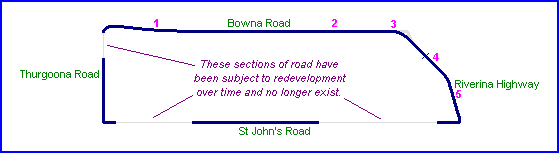
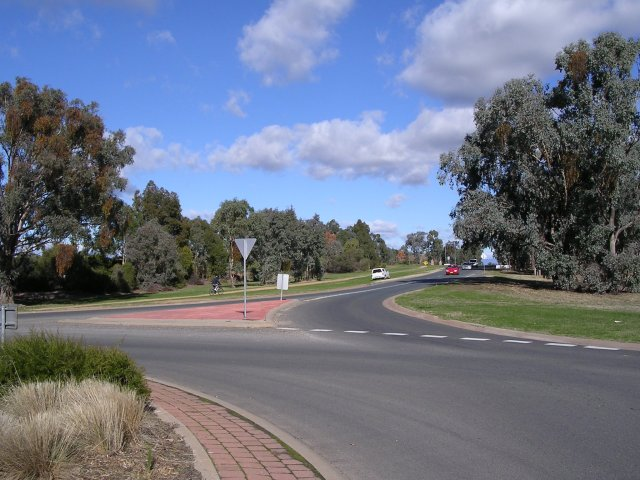
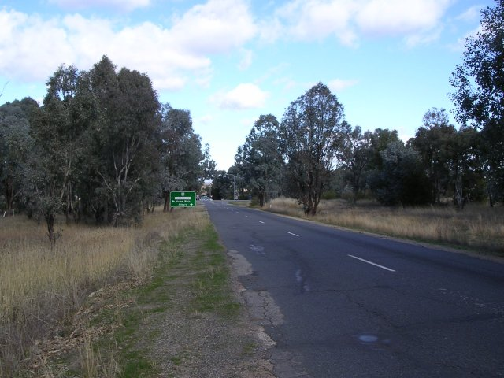
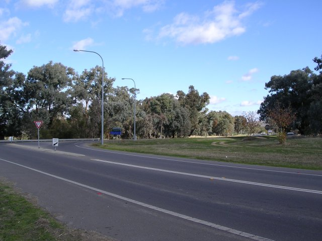
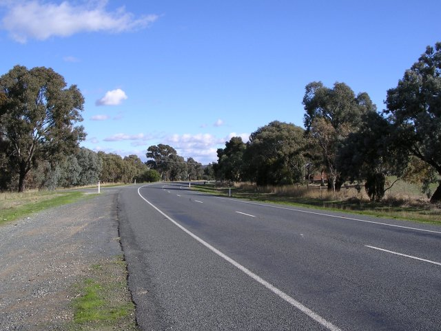
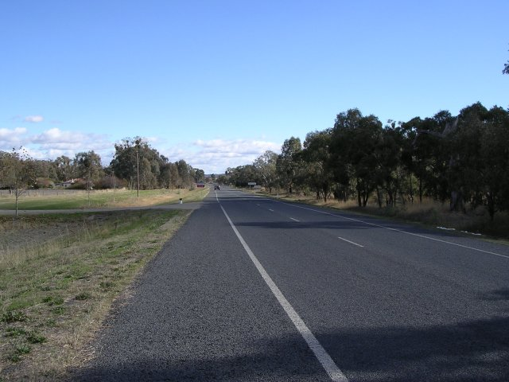

| Map of circuit location |
Wirlinga-Thurgoona, Albury, Australia
| Type: | Street Circuit | |
| Length: | 4.219 Miles // 6.790 km | |
| Used: | 1938-1939 | |
| Photos Taken: | 27th May, 2004 |

Numbers on the map represent the location where the photographs were taken. Scroll
down to view the photographs.
Return to racingcircuits.net's Photo Archive Main Index

1 - Looking down Bowna Road, from the present day roundabout at the
intersection with Thurgoona Drive.

2 - Bowna Road approaching Riverina Highway.

3 - Right turn into Riverina Highway. The course of the circuit originally
ran across what is now open land to the right of the present junction.

4 - Riverina Highway, just after one of the two start/finish area that
were used on the circuit.

5 - Riverina Highway, approaching right turn onto St. Johns Road.
Photographs and Text ©Neil Fackerell. Reproduced here with kind permission.